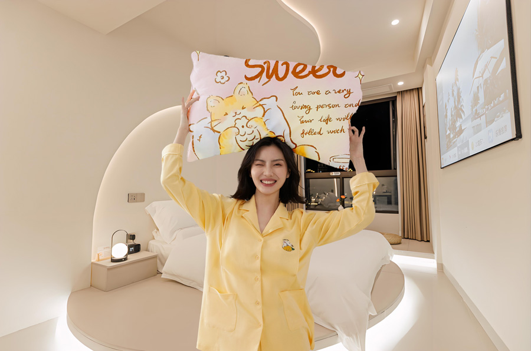

视频教程： https://youtu.be/-4sWxyX3GDs
视频中使用的素材：点击下载>> | 备用下载>>
操作步骤：
高级抠图技巧
- "选择主体"功能：
▸ 适用于清晰轮廓的主体（准确率约85%）
▸ 需配合快速选择工具(W)手动修正
- 选择并遮住：
▸ 边缘检测半径建议3-5px
▸ 勾选"净化颜色"时输出到：新建图层
▸ 画笔流量建议30-50%
智能对象工作流
抠图前转换 无损编辑 右键>转换为智能对象
贴图应用后 可替换内容 双击图层缩略图
线性加深混合模式
适用场景：深色织物纹理叠加
参数组合：
▸ 不透明度：75-85%
▸ 填充不透明度：90%
▸ 配合中性灰图层(50%灰)增强立体感
双曲线调色系统
亮度曲线：
创建S型曲线（锚点输入128/输出145）
蒙版用径向渐变拉出光照效果
色相饱和度：
着色模式色相值参考：
▸ 棉质：15-25°
▸ 丝绸：200-220°
提示：
组管理建议命名规则：[场景]_[日期]_v1
最终添加"照片滤镜"调整层（加温滤镜85，浓度15%）
用色阶(Ctrl+L)统一所有元素的黑场（输入色阶5）
以下是给枕头贴图2成品效果
